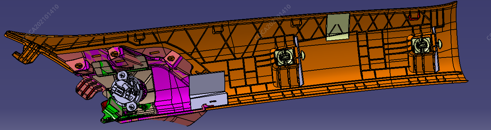
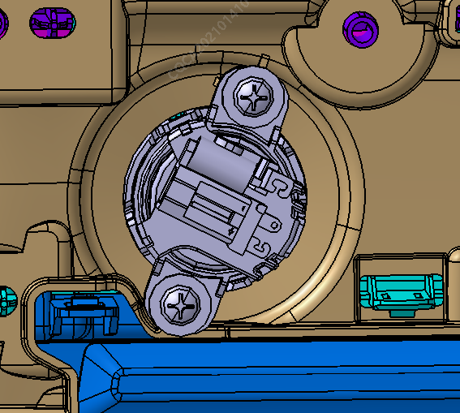

Снятие
1. Снять облицовочную панель стойки A (место установки переднего высокочастотного динамика) или обивку двери (место установки заднего высокочастотного динамика);
2. Извлечь саморез крепления и сдвоенный штекер жгута проводов;
3. Снять высокочастотный динамик;


Установка
Установка выполняется в порядке, обратном снятию